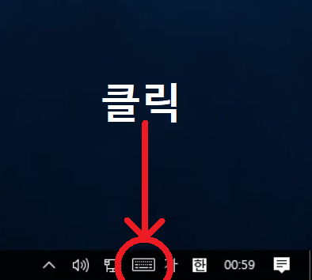
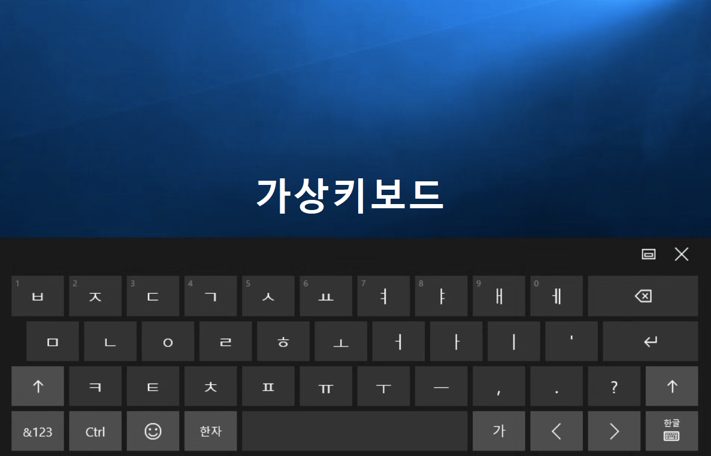

키오스크 자동 영업시작
아침에 키오스크 전원만 켜 두세요. 비밀번호 입력부터 영업시작 버튼까지 대신 누릅니다. 오픈하는 직원이 다른 준비에 집중할 수 있어요.
키오스크(Windows)에 설치 · 무료
전원을 켜면 이렇게 움직여요
화면은 따로 없어요. 뒤에서 조용히 동작하고, 할 일을 마치면 스스로 꺼집니다.
- 전원 켜기Windows가 켜지면 프로그램도 자동 실행
- 비밀번호 화면 확인키오스크 비밀번호 화면이 뜰 때까지 기다려요
- 비밀번호 입력9999를 눌러 들어가요
- 영업시작 두 번영업시작 확인까지 차례로 눌러요
- 스스로 종료끝나면 꺼져서 키오스크에 부담이 없어요
설치 방법
키오스크에서 직접 설치합니다. 키보드가 없으니 화상 키보드를 씁니다.
-
화상 키보드 열기
키오스크 화면 아래 작업표시줄에서 키보드 아이콘을 누르세요.


-
인터넷 창에 주소 입력
인터넷 창을 열고 아래 주소를 입력한 뒤, 목록에서 키오스크 자동 영업시작을 누르세요.
https://coffee-manager.github.io/compose-apps
-
[설치 파일 받기] → 받은 파일 실행
compose-kiosk-setup.exe를 받아 실행하세요.
파란 Windows의 PC 보호 창이 뜨면 추가 정보 → 실행을 누르세요. 개인이 만든 프로그램이라 인증서가 없어서 나오는 안내예요.
-
[다음] → [설치]
관리자 권한은 필요 없어요. ‘지금 실행’은 체크하지 않아도 됩니다. 다음에 전원을 켤 때부터 동작해요.
-
키오스크 비밀번호를 9999로
프로그램이 9999를 누르도록 만들어져 있어요. 다른 비밀번호를 쓰고 있다면 키오스크 설정에서 9999로 바꿔 주세요.
-
재부팅해서 확인
키오스크를 다시 켜고 손대지 않고 기다려 보세요. 영업시작 화면까지 넘어가면 끝입니다.
예전 압축파일(zip) 버전을 쓰셨다면 새 설치 파일로 한 번 설치해 주세요. 예전 바로가기는 지워도 됩니다.
자주 묻는 질문
전원을 켰는데 비밀번호 화면에서 멈춰 있어요
- 키오스크 비밀번호가 9999인지 확인하세요.
- 설치 뒤 한 번은 재부팅해야 자동 실행이 시작돼요.
- 화면 크기가 다른 키오스크 모델은 버튼 위치가 달라 안 될 수 있어요. 키오스크 화면 사진과 함께 개발자 문의로 알려 주세요.
계속 켜져 있어서 키오스크가 느려지지 않나요?
아니요. 영업시작을 마치거나 비밀번호 화면이 10분 동안 보이지 않으면 스스로 꺼집니다. 아무리 길어도 켜진 뒤 30분이면 종료돼요.
그만 쓰고 싶어요
Windows 설정 → 앱 → 설치된 앱에서 ‘키오스크 자동 영업시작’을 제거하세요. 자동 실행 등록도 함께 지워집니다.